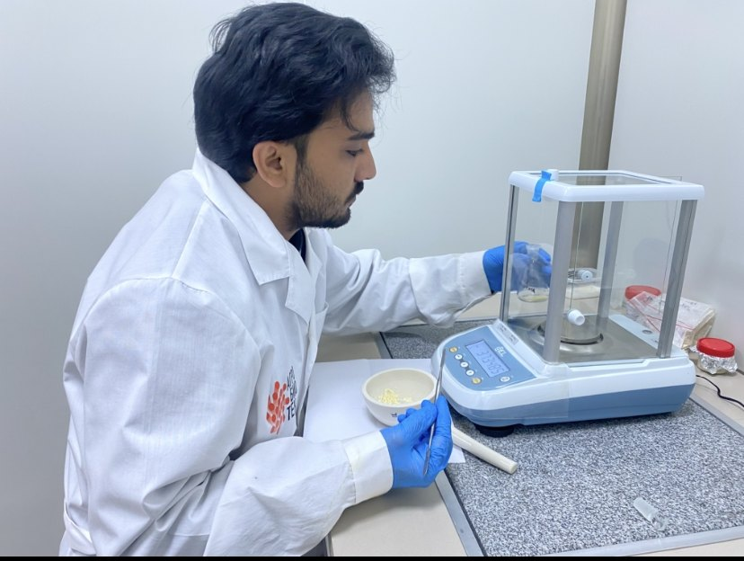
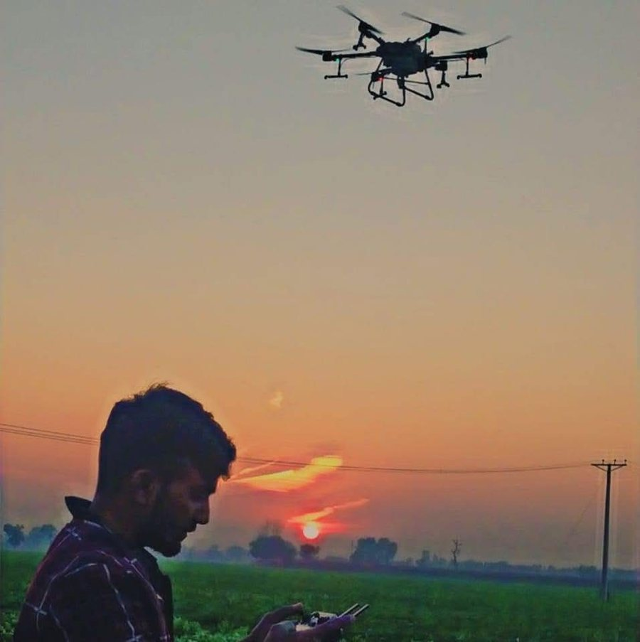
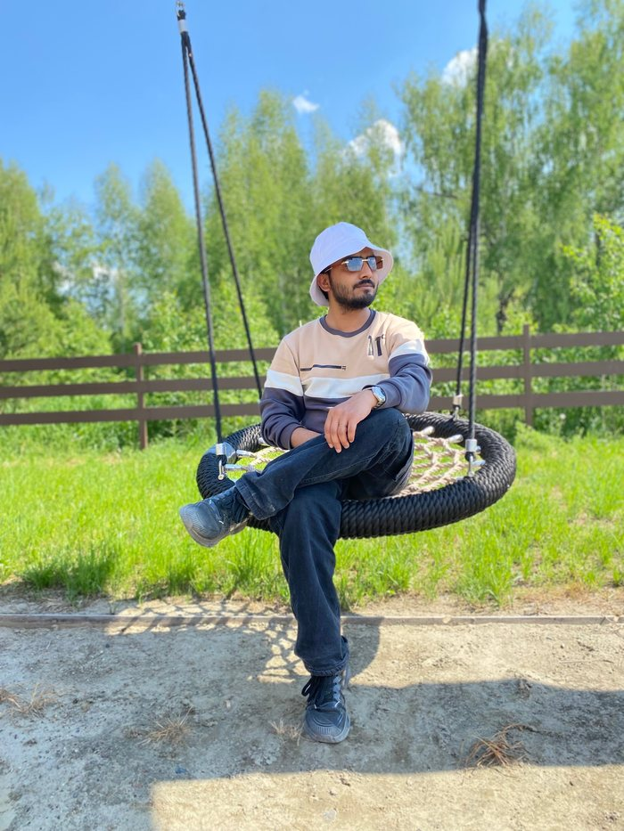
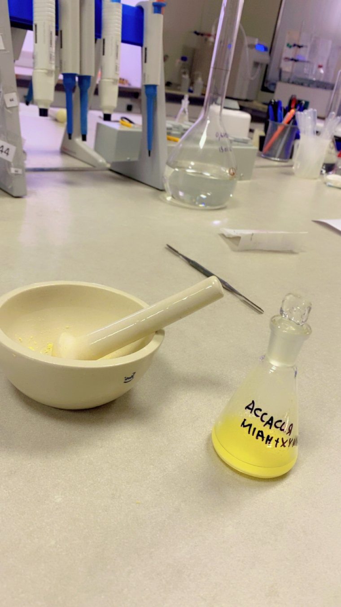

November 2024 – September 2026
MSc Bioinformatics
National Research Tomsk State University, Russia. Thesis defended 14 September 2026, supervised by Dr. Muhammad Amjad Nawaz. Open Doors Scholarship, top 5% of the programme.
publishes as M.F. Majeed
Bioinformatician working on plant comparative genomics: how biosynthetic pathways are built, conserved and lost across lineages, and what that means for crop seed chemistry.

About
My work sits between two scales that rarely meet. At the deep end, I reconstruct gene family histories across divergent plant lineages to ask which enzymes a pathway requires everywhere and which ones a single family invented. At the applied end, I measure what those pathways actually produce in crop seed, by chromatography, in material a breeder could select from.
I finished an MSc in Bioinformatics at National Research Tomsk State University in September 2026, supervised by Dr. Muhammad Amjad Nawaz. Before that I spent two years flying agricultural drones in Pakistan, and before that took a BSc in Agriculture. The route into computational biology ran through the field rather than around it.
What drives me
In soybean, isoflavone content differs several-fold between varieties while the enzymes that make them are conserved and under purifying selection in every species I examined. Conserved enzymes and variable chemistry only reconcile if the variation sits in regulation. That is the question I want to take into a PhD.
Ortholog and paralog inference, selection testing, expression analysis and structure comparison are not tied to one organism. I would rather learn a new system than narrow to one crop.
Breeders still select for seed isoflavone content by sending samples for chemical analysis. A validated marker would shorten that cycle. Having worked on farms, I care which end of the pipeline the result lands on.
Beyond the lab
More than 350 flight hours on XAG and DJI heavy-lift platforms, spraying and aerial imaging over potato, maize, sugarcane, wheat and Rhodes grass. It is the reason I think like an agronomist when deciding what is worth measuring, and why field trials in a project proposal do not worry me.

Four winters and summers in Tomsk since, which is its own kind of fieldwork.

Contact
Open to PhD positions in plant comparative genomics, gene family evolution and crop metabolite genetics. English, native Urdu and Punjabi, basic Russian.
MSc thesis · defended 14 September 2026
Nineteen gene families traced across 22 species, 14 of them legumes and 8 non-legume outgroups, to separate the conserved phenylpropanoid core from the steps restricted to the Fabaceae. Supervised by Dr. Muhammad Amjad Nawaz at Tomsk State University.
Six of the nineteen genes were recovered only in Fabaceae. The rest, including the chalcone reductase often assumed to be legume-specific, have orthologs outside the family.
Experimental arm
Six isoflavones quantified by RP-HPLC-DAD in seed of 20 soybean varieties, following AOAC 2001.10: a C18 column at 30 °C, acetonitrile against 0.1% phosphoric acid over a 50-minute gradient, detection at 254 nm. External-standard calibration gave R² = 0.999 across five levels. Daidzin, glycitin and genistin elute before their aglycones, and the malonyl conjugates dominate the free forms by two orders of magnitude, consistent with IF7GT and IF7MAT being among the Fabaceae-restricted steps.

Collaboration
Public RNA-seq datasets covering fungal, bacterial, viral and insect attack were integrated to separate pathogen class-specific transcriptional responses from a shared response network. Second author on the resulting manuscript, under review at Oil Crop Science, with Dr. Nawaz as corresponding author.
Education
November 2024 – September 2026
National Research Tomsk State University, Russia. Thesis defended 14 September 2026, supervised by Dr. Muhammad Amjad Nawaz. Open Doors Scholarship, top 5% of the programme.
September 2018 – August 2022
University of Agriculture Faisalabad, Pakistan.
Research experience
March – May 2022
Faisalabad, Pakistan. Maize phenotyping across an eleven-week breeding trial, and controlled pollinations for the breeding programme.
Field and professional experience
August 2023 – September 2024
Sahiwal, Pakistan. Planned and flew precision spraying missions for clients from smallholders to corporate farms, calibrated DJI T16, T20 and T30 platforms to crop and field conditions, and collected aerial RGB imagery to flag problem areas for the agronomy team.
June 2022 – August 2023
More than 350 flight hours on XAG and DJI T16/T20/T30/T40 heavy-lift drones. Aerial spray operations on sugarcane at JDW and JK Sugar Mills, advising growers on spray efficiency through flow rate, droplet size and swath width. Represented Sapphire in the Centrigo Farming Ecosystem in Okara.
May 2020 – August 2021
Lahore, Pakistan. Qualitative and quantitative quality checks on agricultural commodities, with weekly reporting on stock quality and quantity.
Publications and manuscripts
Nothing below is published yet. Statuses are given as they stand and will be updated as they change.
George U.E., Majeed M.F., Shafiq M., Ali M.A., Ercisli S., Tsatsakis A.M., Golokhvast K.S., Nawaz M.A. Integrative transcriptomic analysis reveals pathogen class-specific transcriptional reprogramming and a common network architecture in soybean biotic stress responses. Oil Crop Science. Second author.
Majeed M.F. et al. A conserved phenylpropanoid core and six Fabaceae-restricted genes define the isoflavonoid pathway across 22 plant species. First author.
Machine Learning in Plant Breeding, Genetics and Seed Technology: Application of machine learning techniques. Majeed M.F., second author.
Profiles
Methods
Each line below appears in the thesis or in the manuscripts above. Tools I have only read about are not listed.
Languages